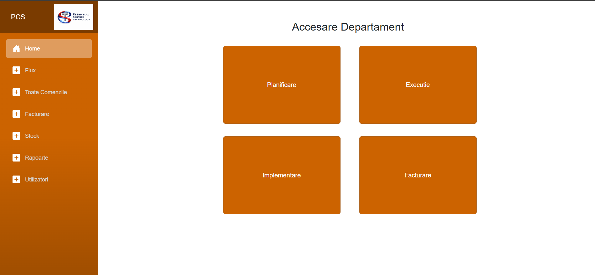

Motivul acestui proiect este dorinta de a centraliza si de a gestiona procesele efectuate intr-o firma,
astfel ca un administrator sa poata sa observe parcursul unei comenzi.
Acesta doreste sa vizualizeze starea comenzilor si sa poata sa genereze rapoarte.
De asemenea se doreste semnalarea problemelor aparute in cadrul fiecarui departament.

| Departament | Detalii |
|---|---|
| Planificare | Planifica comanda |
| Executie | Executa procesele |
| Implementare | Implementeaza solutiile |
| Facturare | Creaza factura pentru procese si solutii |